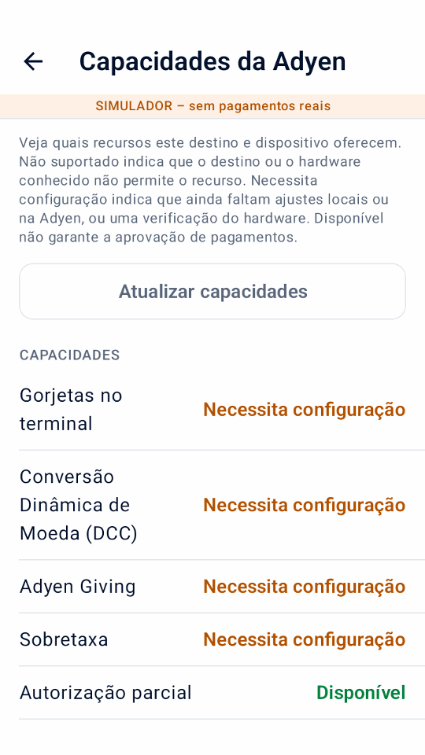
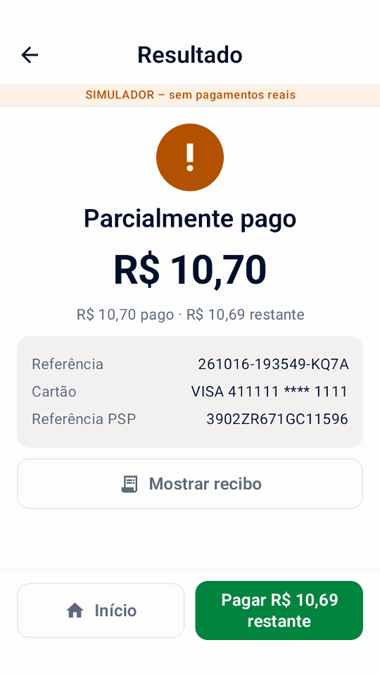
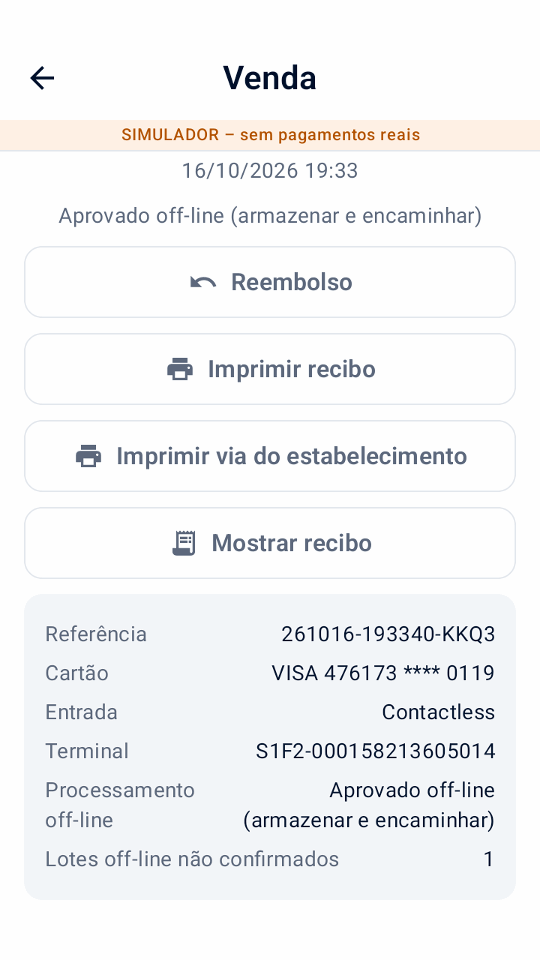
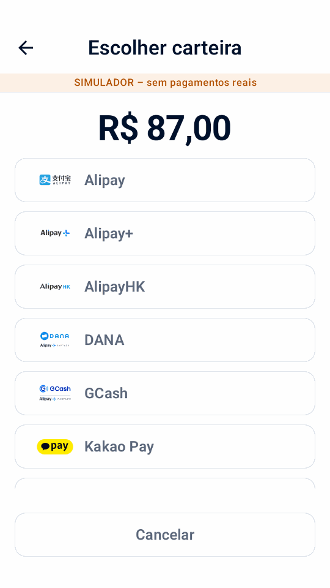
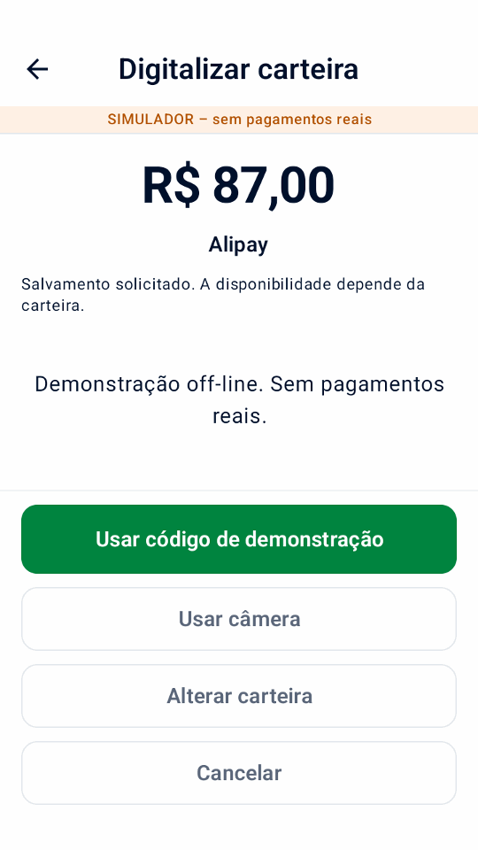
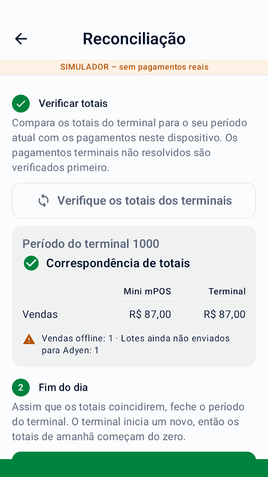
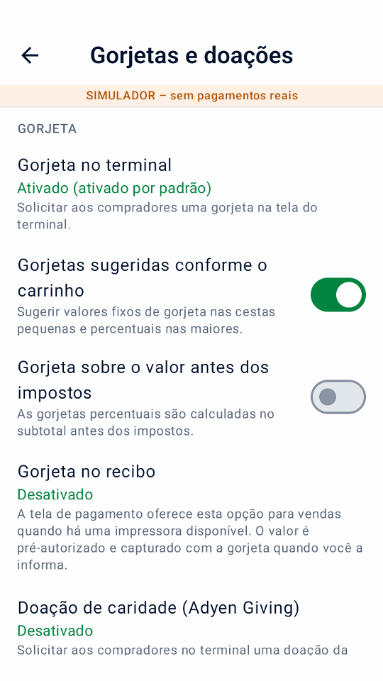

Guia
Usando Mini mPOS
Procedimentos passo a passo para o trabalho diário: receber pagamentos, reembolsar, entregar recibos e fechar o dia. Fluxos de trabalho opcionais seguem no final.
Preparar produtos, impostos e acesso de pessoal
Antes de receber pagamentos reais, preencha a configuração da conexão Adyen. Você precisa de um terminal de pagamento ou do aplicativo Adyen Payments. Em seguida, prepare seus produtos, impostos e acesso de pessoal uma vez.
Definir a moeda e o imposto
- Em Configurações › Pagamentos, escolha um Moeda que sua conta de comerciante aceita para pagamentos presenciais.
- Em Configurações › Imposto, verifique as taxas, se os preços incluem impostos ou se o imposto é adicionado na finalização da compra e a taxa padrão para novos produtos.
Todo produto tem uma alíquota de imposto; use uma taxa de 0% para itens não tributados. Desligando Cobrar imposto deixa de cobrar imposto, mas mantém as alíquotas.
Importante
A alteração da moeda mantém os números nos seus preços; não os converte a uma taxa de câmbio. Verifique os preços dos seus produtos depois.
Adicionar produtos
- Abrir Produtos e toque em +.
- Insira um nome, preço e taxa de imposto. Opcionalmente, adicione uma categoria e um código de barras, digitado ou digitalizado.
- Para um depósito, ligue Produto de pré-autorização para que apareça apenas nas pré-autorizações.
Definir PINs de equipe
- Em Configurações › Segurança, toque em Definir PIN. Ele protege configurações e produtos. Escolha quando o aplicativo será bloqueado novamente.
- Opcionalmente, toque em Definir PIN de gerente. A equipe então precisa dele para reembolsos, cancelamentos, capturas, ajustes de valores e inserção de gorjetas.
Para substituir ou remover o PIN de administrador, use Alterar PIN de administrador ou Remover PIN de administrador; removê-lo também remove o PIN de gerente. Tentativas erradas repetidas bloqueiam a entrada PIN por um tempo. Para um PIN esquecido, consulte Problemas PIN.
Verificar e configurar capacidades da Adyen
Abrir Configurações › Capacidades da Adyen após conectar seu destino de pagamento. A tela mostra recursos como Disponível, Necessita configuração ou Não suportado neste destino. Estes são indicadores de configuração e não uma prova de que sua conta de comerciante, cartão ou método de pagamento possa concluir uma transação. Até que os pagamentos sejam configurados, a tela oferece Concluir a configuração dos pagamentos em vez disso.
- Toque Atualizar capacidades para ler as configurações do terminal selecionado. A inspeção terminal real utiliza o Funções API de gerenciamento no início rápido.
- Para terminais suportados, configure a gorjeta do terminal para a moeda de pagamento, DCC, MOTO ou limites offline. Esses controles atualizam as configurações do terminal na Adyen, não apenas no Mini mPOS, e somente quando você toca Salvar para Adyen. Os valores rotulados como unidades principais usam unidades monetárias inteiras; valores de unidades menores usam a precisão monetária da Adyen.
- Habilite as opções de checkout necessárias em Pagamentos, Gorjetas e doações ou Tela do terminal para o cliente em Configurações e teste-os em TEST. A matriz também lista Adyen Giving, autorização parcial, sobretaxa, cartões-presente, reconciliação de terminais e exibição de compradores; ele não fornece um editor para cada recurso.
Tap to Pay não oferece recursos de terminal físico, como gorjeta de terminal, exibição de comprador, MOTO/MKE, pagamentos off-line ou reconciliação de terminal. A autorização parcial é uma opção de pagamento separada. Para requisitos de ativação de conta e forma de pagamento, siga as Documentação de pagamentos presenciais da Adyen. A disponibilidade do simulador não estabelece suporte de terminal real.

Aceitar um pagamento com cartão
- Na página inicial, toque em Nova venda. Toque em produtos, toque Digitalizar código de barrasou adicione um Item personalizado.
- Toque Cobrar. Verifique os itens, impostos e total, e preencha os campos de referência ou email.
- Toque Pagar. O terminal, ou aplicativo Adyen Payments com Tap to Pay, solicita que o cliente pague.
- Aguarde o resultado. Não inicie outro pagamento até que ele apareça.
- Entregar ao cliente um recibo com Imprimir recibo, Enviar recibo por e-mail ou Compartilhar recibo, a menos que tenha sido entregue automaticamente.
Nota
O terminal lê o cartão; Mini mPOS nunca recebe detalhes completos do cartão. Dependendo do terminal e da sua conta de comerciante, os clientes podem inserir ou tocar em um cartão, ou tocar em um telefone ou relógio. Para pagamentos sem contato, o cartão ou telefone deve permanecer próximo ao símbolo sem contato até que o terminal confirme. Com Tap to Pay, siga as instruções no aplicativo Adyen Payments.
Aviso
Resultado desconhecido não significa que o pagamento falhou. Verifique o pagamento original antes de cobrar novamente.
Referências de clientes, salvamento de cartões e gorjetas são opcionais; veja referências e cartões salvos. Para permitir que os clientes paguem no próprio telefone, use um link de pagamento. Se um pagamento for recusado, consulte pagamentos recusados.
Use fluxos de trabalho de checkout opcionais
Habilite apenas as opções de checkout necessárias em Configurações. Exceto para autorização parcial, esses fluxos de trabalho precisam de um terminal físico compatível, não de Tap to Pay. Verifique Capacidades da Adyen e teste primeiro sua configuração real.
Receber um pagamento parcialmente autorizado
Ligar Permitir autorizações parciais aceitar uma aprovação de cartão por valor inferior ao solicitado. Quando o resultado aparecer Parcialmente pago, verifique os valores pagos e restantes e toque em Pagamento restante nessa tela de resultados e cobrar o saldo em outro cartão. O app mantém as tentativas da mesma venda. Não trate a venda como totalmente paga até que o valor total seja aprovado.
Uma resposta faltante não é uma aprovação parcial. Resolver resultados desconhecidos antes de coletar mais. Não inicie uma nova venda pelo total original: uma parcela aprovada já foi paga.

Usar a tela do terminal voltada para o cliente
Com um terminal de rede/nuvem separado, abra Configurações › Tela do terminal para o cliente. Escolha se deseja mostrar os detalhes do item antes do pagamento, pedir ao comprador para confirmar o pedido ou receber um e-mail quando a finalização da compra não tiver nenhum. Solicitar um e-mail precisa recibos de e-mail a ser configurado; o recibo é então enviado por e-mail automaticamente quando Enviar o recibo por e-mail automaticamente está ativado. Após a aprovação, você pode mostrar um código QR e solicitar uma classificação de 0 a 10; uma classificação retornada aparece nos detalhes da transação.
Esses prompts usam o idioma do aplicativo selecionado e também são simulados. Eles não são oferecidos quando Mini mPOS é executado no próprio terminal de pagamento. O código QR exibido contém a referência do comerciante, não um download de recibo hospedado; continuar a imprimir, enviar por e-mail ou compartilhar o recibo.
Convide uma doação de caridade
Depois de combinar o Adyen Giving com a Adyen, ative Doação de caridade (Adyen Giving) em Configurações › Gorjetas e doações. Na tela de pagamento, selecione-o para solicitar uma doação no terminal após o pagamento. Não é oferecido para pré-autorizações ou retenções de recibos.
A compra e a doação são separadas. O valor da doação informado aparece nos detalhes da transação; uma compra aprovada por si só não confirma uma doação.
Faça um pagamento MOTO ou digitação manual do cartão
- Verifique com a Adyen se seu terminal e sua conta permitem o modo de entrada requerido. Configurar MOTO em Capacidades da Adyen quando necessário, e definir PINs de equipe sob PINs da equipe.
- Em Configurações › Pagamentos, habilite a opção MOTO ou Digitação manual do cartão. Na tela de pagamento, selecione Pedido por correio/telefone (MOTO) para um pedido remoto, ou Digitação manual do cartão (MKE) quando a leitura do chip ou sem contato falha. Somente um pode ser selecionado.
- Toque Pagar, revise o aviso de responsabilidade por fraude e estorno e conclua a aprovação do Gerente quando solicitado. Insira os dados do cartão no terminal, nunca em Mini mPOS.
As transações codificadas acarretam maior responsabilidade por fraude e estorno para o comerciante. Habilitar uma troca de aplicativo não habilita o serviço na Adyen nem elimina esse risco.
Reconhecer pagamentos offline e lotes pendentes
EMV offline e Store-and-Forward precisam de um terminal suportado alcançado localmente: Mini mPOS nesse terminal ou um terminal em sua rede. Eles não são oferecidos por meio de roteamento em nuvem ou Tap to Pay. Organize o processamento offline com a Adyen e analise seus riscos antes de estabelecer limites Capacidades da Adyen; Mini mPOS não coloca pagamentos em fila nem torna um terminal acessível quando sua rede local está inoperante.
O histórico marca as vendas off-line relatadas. Abra uma venda para ver Processamento off-line, se usou EMV off-line ou Store-and-Forward, e qualquer Lotes off-line não confirmados relatado pelo terminal. Uma aprovação off-line ainda não pode ter referência PSP. Não é um resultado desconhecido, mas não confirma que a Adyen recebeu ou liquidou o pagamento.
Restaure a conexão do terminal com a Adyen e verifique os pagamentos carregados e os resultados finais na Customer Area. Verifique os avisos offline e de lote não confirmado durante reconciliação terminal; os totais correspondentes não confirmam a liquidação offline. Se nenhuma resposta conclusiva de pagamento chegar, siga recuperação de resultado desconhecido em vez de assumir a aprovação offline ou cobrar novamente.

Digitalizar o código da carteira do comprador
Uso Digitalizar carteira na finalização da compra para ler um código de pagamento do aplicativo de carteira do comprador. Isso é diferente de ler o código de barras de um produto ou um recibo de reembolso. Funciona com um terminal de pagamento físico, não com Tap to Pay; a descoberta de carteira precisa de uma função de leitura.
- Verifique os campos total e checkout e toque em Digitalizar carteira. Se a gorjeta de recibo for selecionada, confirme o pagamento sem ela: a carteira cobra o total imediatamente, não uma pré-autorização.
- Escolha a carteira do comprador. Uma única carteira disponível é selecionada automaticamente. Aparecem apenas carteiras configuradas individualmente; Alipay + não implica opções separadas de GCash, DANA, Kakao Pay ou TrueMoney.
- Em um terminal confirmado equipado com scanner, pressione seu botão de digitalização. Este pode ser o terminal de rede/nuvem, não o dispositivo executando Mini mPOS. Para digitalizar com a câmera do dispositivo, toque em Usar câmera.
- Digitalize o código QR de pagamento do comprador ou o código de barras de pagamento. Uma digitalização válida inicia o pagamento imediatamente. Aguarde o resultado normal do pagamento e entregue o seu recibo.
O cancelamento mantém os campos carrinho e checkout. Códigos inválidos não compensam: digitalize novamente ou troque de carteira. Uma verificação nativa expira após 30 segundos; usar Digitalizar novamente ou a câmera. Sair do aplicativo interrompe a digitalização; retornar requer uma nova varredura explícita. Os códigos não podem ser digitados ou colados.
Salvar cartão tenta salvar os dados de pagamento quando a referência e o consentimento do comprador permitirem. O suporte à carteira varia; apenas um token de pagamento armazenado retornado significa que os detalhes foram salvos. Um pagamento aprovado sem token ainda será aprovado. Lidar com descoberta de carteira ou problemas de pagamento; nunca substitua um pagamento desconhecido digitalizando novamente.
Confirme a configuração da sua carteira e teste o comportamento com o Guia da carteira Adyen e Guia Adyen PayPal e Venmo.


Demonstrações de simuladores em português do Brasil de digitalização de carteiras.
Reembolsar ou cancelar um pagamento
- Reembolsar
- Por um pagamento cobrado. Devolve todo ou parte do dinheiro.
- Cancelar (anular)
- Para um pagamento retido que não foi capturado: toque em Cancelar pré-autorização para um depósito, ou Cancelar pagamento para uma venda Aguardando gorjeta. Isso libera a retenção.
Para reembolsar:
- Na página inicial, toque em REEMBOLSO e escaneie o código de reembolso QR no recibo ou abra a venda original em Histórico.
- Escolha um reembolso total, um valor ou itens individuais. Os reembolsos de itens precisam da venda original neste dispositivo.
- Confirme o reembolso e insira o Gerente PIN se solicitado.
Cada reembolso está vinculado ao seu pagamento original; reembolsos sem um não são suportados. Reembolsar links de pagamento pagos na Customer Area.
Importante
Reembolso solicitado significa que a Adyen recebeu a solicitação, e não que o cliente tenha o dinheiro. Confira o resultado final na Customer Area. Se o resultado de um reembolso for desconhecido, verifique antes de tentar novamente.
Imprimir, enviar por e-mail ou compartilhar recibos
A partir de um resultado de pagamento ou entrada do Histórico, toque em Imprimir recibo ou Enviar recibo por e-mail. Tablets e telefones também oferecem Compartilhar recibo, que envia uma imagem através do menu de compartilhamento do Android. A impressão precisa de um terminal com impressora.
Personalizar e testar recibos
- Em Configurações › Recibos, insira os dados da sua empresa, cabeçalho e rodapé. Ou toque em Importar detalhes comerciais da Adyen para revisar os dados da Adyen. Escolha Preencher dados ausentes para manter o texto existente ou Substituir dados existentes para revisar os dados da Adyen. Escolha Preencher dados ausentes para manter o texto existente ou Substituir dados existentes para usar o nome, endereço e telefone fornecidos. Campos importados em branco, identificação fiscal, título e rodapé permanecem inalterados.
- Escolher Imprimir automaticamente, quando imprimir um Via do estabelecimentoe se deve Mostrar código de reembolso QR.
- Toque Imprimir recibo de teste e verifique a impressão. A visualização na tela não mostra o layout exato da impressora.
Outras opções:
- Mostrar valores de impostos
- Mostra o imposto incluído ou adicionado ao total. Não altera o imposto cobrado.
- Mostrar discriminação fiscal
- Lista o imposto para cada taxa. Necessário mostrar o imposto incluído quando os preços incluem impostos.
- Mostrar totais tributáveis por taxa
- Agrupa os totais dos itens por alíquota de imposto, incluindo 0%.
- Mostrar referências
- Ligado por padrão. Imprime a referência do comerciante e qualquer referência do cliente, para que um recibo possa ser correspondido ao seu pagamento.
- Taxa de imposto marcada (%)
- Marca itens nessa taxa com um Marcador de item e sua explicação. Deixe em branco para não haver marcador.
- Caracteres por linha
- 32 por padrão, para rolos de recibos estreitos. Escolha a largura da sua impressora com um teste de impressão.
Definir o idioma
O aplicativo oferece inglês, chinês simplificado, chinês tradicional, japonês, português do Brasil, espanhol e francês. Escolha Configurações › Idioma para substituir o idioma neste dispositivo. A mudança se aplica imediatamente ao texto do aplicativo e às etiquetas de recibos geradas pelo aplicativo; o texto salvo do comerciante, os nomes dos produtos, as configurações de moeda e impostos permanecem inalterados. Seguir dispositivo usa o idioma do dispositivo no Android 12 ou anterior, ou a escolha de idioma por aplicativo do Android no Android 13 ou posterior. As linhas de recebimento do cartão Adyen seguem o idioma de recebimento do próprio terminal.
Configurar recibos de e-mail
- Abrir Configurações › Recibos por e-mail. Escolha seu provedor ou insira o servidor SMTP, porta, remetente e login. Use STARTTLS ou SSL/TLS.
- Envie um e-mail de teste.
- Na mesma tela, escolha quando solicitar o e-mail do cliente e se deseja enviar os recibos automaticamente.
Siga as instruções do seu provedor para permitir SMTP e obter a senha correta:
Se os recibos não forem impressos ou enviados, consulte problemas de impressora e e-mail.
Encontre pagamentos e feche o dia
Histórico lista pagamentos e reembolsos por dia, com totais diários.
- Filtrar por vendas, Aguardando gorjeta, pré-autorizações, reembolsos ou Precisa de atençãoe usar Forma de pagamento para uma marca de cartão ou carteira.
- Pesquisa por referência, código de autorização, referência de cliente ou email, últimos quatro dígitos do cartão, marca, carteira ou valor exato. Cada palavra deve corresponder:
visa 34encontra pagamentos Visa de 34.
Os totais na tela seguem sua pesquisa e filtros. Os pagamentos retidos, como depósitos e gorjetas no recibo, contam como vendas no dia em que sua captura é aceita.
Fechar o dia
- Abrir Histórico, filtrar por Precisa de atenção e resolver cada entrada; veja resultados desconhecidos.
- Verifique o Aguardando gorjeta e filtros de pré-autorização. Insira gorjetas e capture ou cancele depósitos antes que seus depósitos expirem.
- Toque no ícone de impressão ao lado do dia para imprimir o Resumo diário local.
- Reconciliar com os relatórios da Adyen na Customer Area; veja o Guia de reconciliação de liquidação da Adyen.
O resumo cobre o dia inteiro, ignorando os filtros: vendas, gorjetas incluídas, reembolsos aceitos, líquidos, novas retenções e operações não resolvidas, para cada moeda. TEST e a atividade do simulador são rotuladas. Links de pagamento pagos e capturas sem data conhecida são listados separadamente como atividades sem data.
Importante
O resumo diário local cobre apenas pagamentos mantidos neste dispositivo. Não é liquidação da Adyen e não inclui outros dispositivos. O Customer Area é oficial.
Aviso
Alternar entre LIVE, TEST e o simulador exclui permanentemente todo o histórico de pagamentos e dados de relatório neste dispositivo. Se existirem pagamentos inacabados, o aplicativo avisa novamente: nada é cancelado na Adyen, mas a recuperação local e os dados de novas tentativas seguras são perdidos. Os produtos e as configurações permanecem.
Compare com os totais do terminal e feche um período
- Na página inicial, toque em Reconciliação, então Verifique os totais dos terminais. Mini mPOS primeiro verifica pagamentos de terminais pendentes ou desconhecidos e, em seguida, mostra Mini mPOS e vendas de terminais e reembolsos lado a lado.
- Se Os totais diferem, resolva os pagamentos que necessitam de atenção no Histórico e verifique novamente. O período terminal não é necessariamente um dia corrido; outros dispositivos que usam o terminal ou falta de histórico local podem causar diferenças. Links de pagamento, cobranças de tokens e histórico de amostras não são pagamentos terminais.
- No final do dia, toque em Encerrar período do terminal, confirme e conclua a aprovação do Gerente, se solicitado. O terminal encerra seu período e inicia um novo; isso não pode ser desfeito.
- Opcionalmente, toque em Imprimir o relatório de hoje para o Resumo diário local.
Isto está disponível para terminais físicos e para o simulador, não para Tap to Pay. Uma comparação correspondente ou um período fechado não confirma a liquidação, a conclusão do reembolso ou o upload off-line. Continue usando o Customer Area para obter resultados financeiros finais.

Utilizar referências e salvar cartões
- Referência do comerciante
- Para registrar um número de reserva ou pedido, ative Configurações › Pagamentos › Solicite uma referência de comerciante. O número identifica o pagamento na Adyen. Se deixado em branco, uma referência exclusiva será gerada.
- Referência do comprador
- Em Configurações › Pagamentos, escolha o Referência do comprador: uma referência do cliente digitada na finalização da compra (o padrão), o e-mail do cliente ou nenhum. Ele é enviado para a Adyen com cada pagamento. As referências de e-mail são criptografadas por padrão; use o mesmo sal em todos os dispositivos.
- Cartões salvos
- Com um conjunto de referência do comprador, ligue Oferecer salvamento de cartões e escolha o Modelo de processamento recorrente para sua configuração Adyen. Obtenha o consentimento do cliente antes de selecionar Salvar cartão para pagamentos futuros. Para carregar um mais tarde, consulte cobrar um token.
Carregar um token
- Na página inicial, toque em Cobrar token e insira o Gerente PIN se solicitado.
- Insira a referência do cliente, ou o e-mail quando for a referência do comprador, e toque em Buscar tokens.
- Escolha um token e, em seguida, adicione produtos ou um Item personalizado. Este carrinho é separado Nova venda.
- Revise a cobrança e toque Cobrar.
O cliente não está presente, portanto obtenha primeiro o seu consentimento. Tokens salvos para um diferente Modelo de processamento recorrente não pode ser escolhido. Reembolsar esses pagamentos de Histórico; seus recibos não possuem código QR de reembolso. Se o resultado de uma cobrança for desconhecido, verifique-o no Histórico em até sete dias, depois na Customer Area. Na finalização da compra de uma nova venda, assim que a referência do comprador inserida tiver tokens salvos, Cobrar token aparece entre Digitalizar carteira e Criar link de pagamento: após aprovação do gerente, escolher um token para cobrar a venda do mesmo.
Receba o pagamento com um link
Pré-requisitos
- Sua conta de comerciante atende aos Requisitos do Adyen Pay by Link, incluindo termos e condições, antes do uso ao vivo
- Na finalização da compra, toque em Criar link de pagamento.
- Mostre o código QR ou toque em Enviar link por e-mail, Imprimir link ou, em um tablet ou telefone, Compartilhar link.
- Mantenha a tela do link aberta para ver o pagamento chegar, ou depois toque em Verificar pagamento em sua entrada Histórico.
- Se o link não for mais necessário, toque em Cancelar link.
A entrada mostra Aguardando pagamento até que o link seja pago, expire ou seja cancelado. Defina por quanto tempo os links funcionam Configurações › Pagamentos › Links de pagamento. Os links são apenas para vendas, não para depósitos ou gorjetas no recibo.
No simulador, os links funcionam offline sem credenciais API. Seus códigos QR não aceitam pagamentos. Toque Simular pagamento para concluir a demonstração, com aprovação do gerente, se configurado. A tela e os recibos entregues permanecem rotulados como demonstrações; nenhum dinheiro se move.
Importante
Qualquer pessoa com um link real pode pagar até que ele expire. Reembolsar links pagos em Customer Area › Pagamentos › Lista de pagamentos; o aplicativo não pode reembolsá-los.
Se um link estiver faltando ou não for atualizado, consulte problemas de link de pagamento.
Manter e receber um depósito
Pré-requisitos
- Pré-autorização habilitada pelo Suporte Adyen para seus métodos de pagamento; veja o Guia de pré-autorização Adyen
Uma pré-autorização retém um valor no cartão sem cobrar. Toda a sua conta não precisa de captura manual; Mini mPOS solicita apenas para esses pagamentos.
- Na página inicial, toque em Nova pré-autorização. Escolha um produto pré-autorizado, escaneie seu código de barras ou insira um valor. Cada pré-autorização possui um item.
- Na finalização da compra, toque em Pré-autorizar. O recibo mostra o valor retido.
- Quando estiver pronto, abra a entrada em Histórico e escolha uma ação:
- Captura
- Cobre o valor devido. Uma valor menor libera o restante; um valor maior solicita primeiro ao emissor do cartão que aumente a retenção. Os reembolsos são possíveis assim que a captura for solicitada.
- Ajustar valor
- Altera o valor retido sem cobrança. O envio do mesmo valor renova a autorização.
- Cancelar pré-autorização
- Libera a retenção. Se o pagamento já foi capturado na Customer Area, a Adyen o reembolsará integralmente.
Captura solicitada não é uma confirmação final; verifique o Customer Area. Para respostas imediatas aos ajustes, habilite Dados de autorização de ajuste de retorno conforme descrito no Guia de ajuste de autorização Adyen.
Aviso
As retenções expiram. Verifique diariamente o filtro de pré-autorização e capture ou cancele imediatamente. Para operações com falha ou desconhecidas, consulte problemas de captura.
Coletar uma gorjeta no terminal
- Verifique as gorjetas no terminal em Capacidades da Adyen. Defina as opções de gorjeta predefinidas e personalizadas do terminal para a moeda de pagamento quando necessário.
- Em Configurações › Gorjetas e doações, habilitar Gorjeta no terminal e escolha seu padrão de checkout. Habilite opcionalmente Gorjetas sugeridas conforme o carrinho para valores fixos em cestas pequenas e percentagens em cestas maiores, ou Gorjeta sobre o valor antes dos impostos.
- Na tela de pagamento, selecione Gorjeta no terminal e toque em Pagar. O comprador escolhe uma gorjeta antes de o cartão ser cobrado. Verifique o total e a gorjeta devolvidos e entregue o recibo.
Isto não necessita de impressora ou entrada posterior de gorjeta. Gorjetas no terminal e gorjetas sobre o recibo não podem ser selecionadas juntas. Nenhum deles é oferecido para pré-autorizações, pagamentos de carteira digitalizada ou links de pagamento; as gorjetas no terminal não são oferecidas com Tap to Pay.

Colete uma gorjeta escrita no recibo
Pré-requisitos
- Um terminal com uma impressora
- Pré-autorização e sobrecaptura habilitadas pelo Suporte da Adyen; veja o Guia de gorjetas de recibo da Adyen
Em Configurações › Gorjetas e doações, escolha Ativado (padrão desativado) ou Ativado (ativado por padrão) para definir como a opção na tela de pagamento inicia. Desativado, o padrão, oculta-o. Alguns cartões de débito e carteiras não suportam esse fluxo.
- No final da compra, ligue Gorjeta no recibo e toque em Pagar. A conta é retida, não cobrada.
- Imprimir o recibo. Possui linhas de gorjeta e total em branco, e a cópia do comerciante possui uma linha de assinatura.
- Quando o cliente tiver preenchido, toque em Insira a gorjeta no resultado ou no histórico Aguardando gorjeta filtro.
- Insira a gorjeta ou o total, ou toque em Nenhuma gorjetae confirme.
O aplicativo captura a conta mais a gorjeta. Gorjetas acima de 20% precisam primeiro que o emissor do cartão aumente a retenção; se recusar, insira uma gorjeta menor ou nenhuma. Uma gorjeta salva não pode ser alterada. Antes de inserir uma gorjeta, cancele o pagamento em vez de reembolsá-lo; depois, os reembolsos incluem a gorjeta.
Aviso
Informe todas as gorjetas prontamente, incluindo zero, para capturar os valores antes que as retenções expirem. Para capturas com falha ou desconhecidas, consulte problemas de captura.
Configure mais dispositivos e gerencie dados
- No dispositivo configurado, abra Configurações › Dados e transferência › Compartilhar com outro dispositivo. Escolha o catálogo, configurações e/ou senhas e chaves e toque em Mostrar códigos QR.
- No novo dispositivo, escolha Configurar a partir de outro dispositivo e escaneie todos os códigos, em qualquer ordem. Escolha se deseja mesclar ou substituir seu catálogo.
- Insira o código de transferência de 12 caracteres mostrado no primeiro dispositivo, mesmo ao copiar apenas produtos ou configurações. Mantenha-o separado dos códigos QR. Toque Importar.
- Verifique preços e impostos, teste a conexão em Configurações › Terminale imprima um recibo de teste.
O novo dispositivo mantém destino de pagamento, terminal, ambiente e registro Tap to Pay próprios. Uma chave compartilhada funciona para outro terminal somente se a Adyen atribuir a mesma chave a ele.
Importante
Esta é uma cópia única, não uma sincronização ou um backup do histórico de pagamentos. Cada dispositivo mantém seus próprios pagamentos. Limpar os dados do aplicativo em Android exclui todos os produtos, configurações e histórico do dispositivo.
Em Configurações › Dados e transferência, conjunto Manter transações para ou toque em Limpar histórico liquidado; pagamentos não resolvidos são sempre mantidos.
Em um tablet ou telefone, Mini mPOS verifica uma versão mais recente na inicialização. Se a casa oferece Atualizar, toque nele para abrir o APK em seu navegador e instale o download. Os terminais Adyen são atualizados por meio do Customer Area, não deste prompt. Você também pode obter o último lançamento e siga o etapas de instalação. Mantenha a mesma fonte de assinatura e instale sobre o aplicativo existente; não desinstale ou limpe seus dados.
Para problemas de importação, consulte PIN e problemas de transferência.